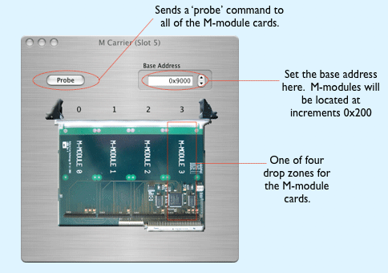
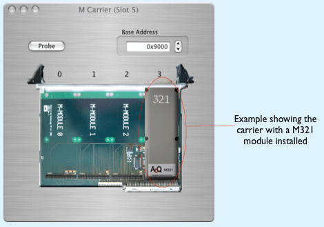

This card is a carrier for up to four standard industryPack modules. The M-Carrier object can only be placed into a VME crate object. Double-clicking it brings up a dialog onto which you can drop one of the M-modules, i.e. the M321. The configuration icon for the M-Carrier looks like this: 

Here's an example of a carrier that is holding one M-module, the M321. M-modules can be dragged to different positions on the card. When an M-module is inserted into the carrier, a connection point may appear on the IP carrier card in the VME crate view, depending on the type of M-module being used.
